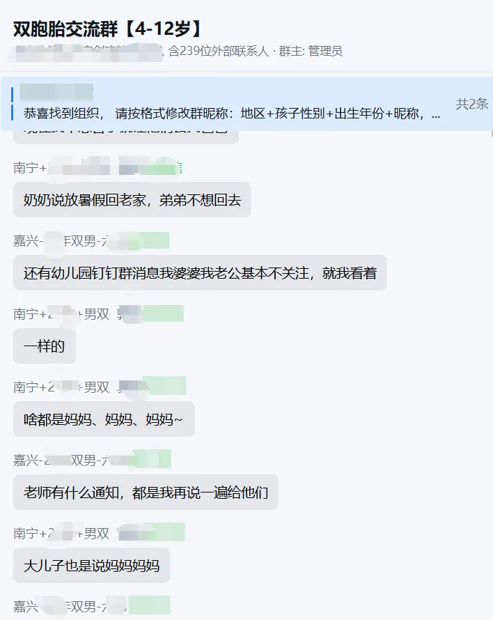
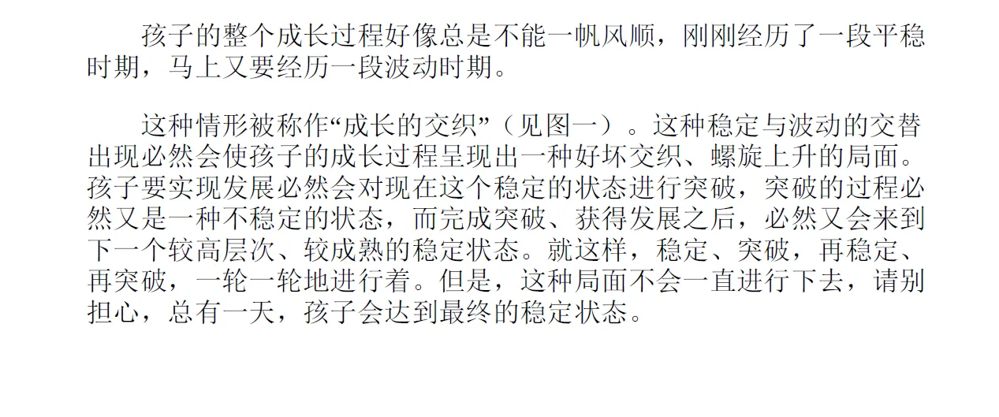
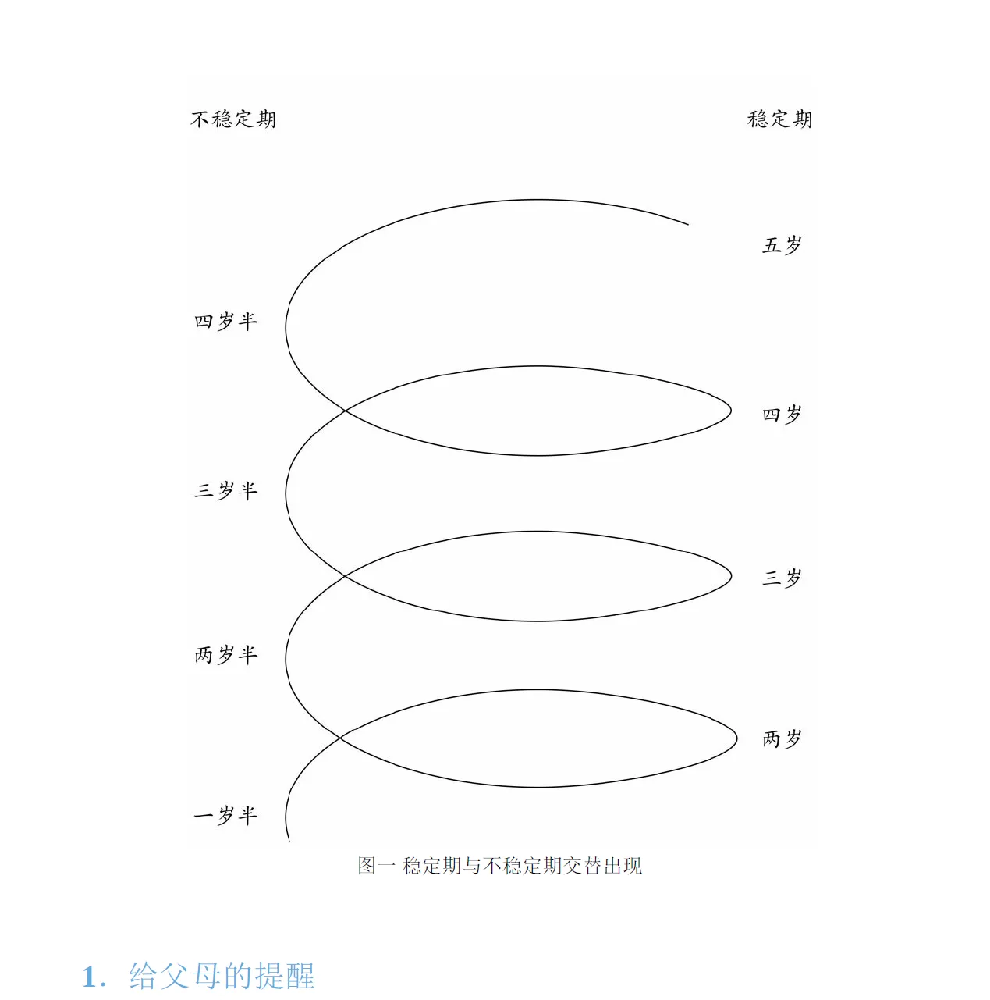

文|圆圈妈妈
某书上，收到的咨询，隔着屏幕都能感受到的焦虑，觉得特别有代表性，也许身为职场妈妈的你正在经历着。我打算这么回答，如有其他招儿，欢迎留言区说说呗。
这位妹子，你好，
先抱抱你，你现在整个人写满了两个字：恐惧。
你怕的不是他们学不会拼音，怕的是他们变成坏孩子。这种恐惧，我一个过来人，可太熟悉了。
但是呢，你别慌，更别急着否定自己，你绝对不是一个失败的妈妈。
你说，不想让他们歪了？
就冲你这焦虑到半夜睡不着觉的劲儿，他们能歪到哪去？
真正会歪的孩子，他们的妈此刻正在戳麻将，看霸总，根本不会到处找法子。
你说，老师在课上问什么都说不知道，到了大班，胆子大了开始调皮了？
恭喜你啊姐妹，这说明你这娃儿们发育完全正常，甚至还很聪明。
那种小班中班乖得像鹌鹑、问什么都大声回答，我知道的娃，要么是天生的学霸胚子，要么是已经被吓傻了。你的两个儿子，明显是在试探这个世界的边界。
他们现在就是两头被关在家里太久的小野兽，突然发现外面有个叫教室的丛林，不撒个欢、打个滚、在老师这个山大王的头上挠两下，都对不起他们刚长出来的爪子。
至于什么碰老师东西、插嘴、不受待见。
唉，你这养的是儿砸啊，还是两个！儿子的出厂设置里从来就没装【乖巧】这个程序。
你要是很在乎别的小朋友家长怎么看，那你接下来的六年可咋活啊？这只是开始啊！
港真，那些家长自己家一个娃都恨不得供起来，看你们家俩，他们心里的台词是：嚯，这妈真不容易。
你信我，真不是嫌弃，就算是嫌弃， 那也是酸的。
正如《你的N岁孩子》系列丛书所说那样，
孩子的整个成长过程好像总是不能一帆风顺，刚刚经历了一段平稳时期，马上又要经历一段波动时期。
《你的N岁孩子》路易斯·埃姆斯
需要这本书的电子档，公众号后台回复“娃”索取即可~
当然，不是说放任不管，可密切关注，在恰当时机加以引导。
要是你跟他俩说 要做一个有品德的人，他俩脑子里估计在转：品德是啥，能吃吗？你说要乖，听话，他们可能觉得：我乖了妈妈就不念叨了，我能多玩会儿。
不如这样， 换个用他们能懂的语言。
我当年是直接跟圆圈兄弟这么说的：“上课插嘴，不是坏，是亏。你一插嘴，老师就少讲一个好玩的知识，最后是你自己没得玩。碰老师东西？那是别人的地盘，你去别人家不敲门就乱翻，人家下次还让你进门吗？”
总之，别上纲上线到道德，得下沉到利益。让他们觉得，做个守规矩的人，最划算。
你说，这兄弟俩因为屁大点事打架？
诶，这太正常了。
别急着当裁判，你一介入，他俩更来劲，都哭给你看，都想当你心里最委屈的那个。
你要实在想做点啥，那就拿个手机在旁边拍，然后投屏给他们看：“来，看看你俩刚才那龇牙咧嘴的样，像不像两只抢香蕉的狒狒？”
那要是跟别的小朋友冲突？只要没受伤，别按着他们头去道歉，就回家复盘，只问三句话：
发生了什么？你哪疼？下次怎么能既不吃亏，又不动手？
快一年级，是时候训练他们了，咱有打赢的实力，也有不动手就能解决的法子。
就这能力，我认为，比考双百值钱。
你说，他们不讨喜？
我说，妹子，你都在心里给他们贴这个标签了，他们能讨喜到哪里去？
双胞胎，尤其是两儿砸，在6岁这个狗都嫌的年纪，本来就是在被嫌弃的夹缝中求生存的，最应该多来些彩虹屁，让他们那朝气蓬勃的小火苗不至于熄灭掉，比如：
“哟，你刚刚帮妈妈拿了拖鞋，好贴心，我正需要呢。”
让他们知道，他们在你眼里不是麻烦，只是两个偶尔有点莽撞但很可爱的小男子汉。如果家里不给足认可，他们就只能去外面博出位，哪怕是被骂，也比被当空气强吧。
你说，你工作忙，对他们陪伴少？
妹子你是人，又不是神呀。就算是神，也有不完美的时候吧，关键时刻能兜得住就行了，逞能又不能当饭吃。
每天睡前，哪怕花五分钟，一边一个搂着，什么大道理不讲，就问一句：“今天有什么高兴的事，说出来让妈妈也高兴一下？”
最后你问：是不是太不严厉了？
不，我反而觉得你是太用力了。
你想把他们修成标准答案，
但他们偏偏是两道开放题。
妹子，
路还长且艰，如果还是对孩子的教育力不从心，那来群里聊聊吧，一大波跟你一样的双胞胎妈妈，一边受伤，一边治愈....

到时候你会发现，你家这俩，太正常不过了。
-end-
暑假陪双胞胎不抓狂：这100部动画电影，直接救命
今晚，全中国不知道多少双胞胎家长，在两个哭包中间崩溃
再说3遍！双胞胎写作业，不要在一起！不要在一起！不要在一起！


